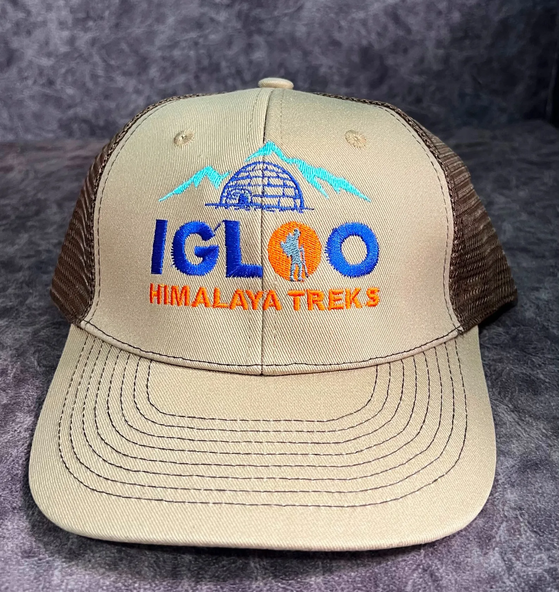
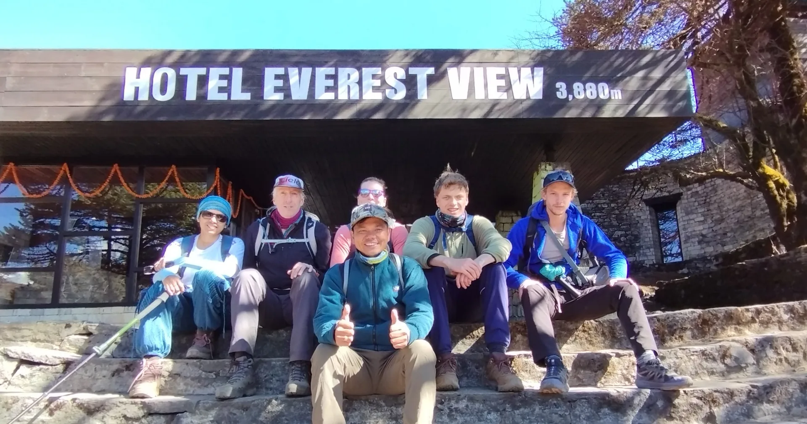
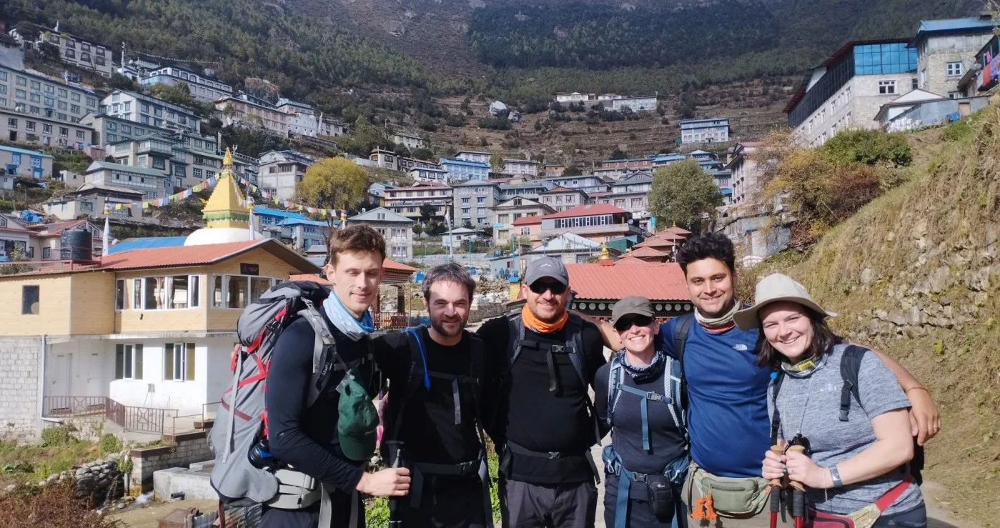

1. Executive Summary: Weight Limits & Why Everest View Packing is Lighter
One of the greatest appeals of the Everest View Trek is how manageable your packing list is compared to full-circuit Himalayan expeditions.
Because the route remains exclusively within the sub-alpine forest and Sherpa cultural belt (stopping at Syangboche Ridge at 3,880m or Tengboche Monastery at 3,867m), you completely bypass the sub-zero glacial moraines of Lobuche and Gorak Shep. You sleep in heated dining room lodges, walk shorter daily stages (4 to 6 hours), and enjoy quick access to local shops in Namche Bazaar if you ever need extra batteries or wool socks.
Strict Lukla Flight Luggage Regulations
- Total Weight Allowance: Exactly 15.0 kg (33.0 lbs) per passenger on domestic flights from Kathmandu / Ramechhap to Lukla.
- Checked Duffel Bag: Maximum 10.0 kg (22.0 lbs) — this is handed to your porter at Lukla airstrip.
- Cabin Daypack: Maximum 5.0 kg (11.0 lbs) — this stays on your back throughout flights and trail days.
- Excess Baggage Fees: Charged at roughly NPR 200 to 250 ($1.50 to $2.00 USD) per extra kilogram, subject to strict aircraft weight capacity.
Any city clothes, suitcases, or non-trekking travel souvenirs can be left securely in the free luggage storage room of your Kathmandu hotel before flying to Lukla.
2. Duffel Bag vs. Daypack Strategy: What Goes Where?

Understanding how luggage operates on a guided trek is vital for your comfort on the trail:
| Luggage Item | Recommended Size / Type | Weight Target | Contents to Pack |
|---|---|---|---|
| Main Duffel Bag (Porter Pack) | 70L to 90L heavy-duty water-resistant duffel (e.g. North Face Base Camp or Igloo Treks duffel) | 9 to 11 kg | Sleeping bag, extra base layers, evening lodge clothes, camp sandals, heavy toiletries, spare battery packs |
| Trekking Daypack (Personal Pack) | 28L to 35L technical daypack with hip belt and rain cover (e.g. Osprey Talon / Sirrus) | 4 to 5 kg | Water bottles (2L), rain shell, warm fleece layer, camera, passport, cash, sunscreen, lip balm, blister kit, day snacks |
Porters walk at their own pace and usually arrive at the evening lodge 1 to 2 hours ahead of your trekking group. You will NOT have access to your main duffel bag between morning departure and evening check-in. Never pack your rain jacket, wallet, passport, prescription medication, or water bottle in your duffel!
3. The 4-Layer Upper Body System: Regulating Heat on Stone Steps

Himalayan temperatures fluctuate dramatically within minutes. While sweating up the sunlit Namche Hill, you will be in a lightweight t-shirt. The moment you stop for tea in the shade or a cloud rolls over the ridge, the temperature plummets by 10°C.
The secret to mountain comfort is the Four-Layer Upper Body System:
| Layer | Item Type & Material | Quantity | Function & Trail Usage |
|---|---|---|---|
| 1. Base Layer | 150–200 gsm Merino Wool or Capilene synthetic long-sleeve | 2 to 3 | Next-to-skin moisture wicking. Merino resists odors for days. NEVER wear cotton! |
| 2. Mid Layer | Lightweight grid-fleece pullover or Polartec 100/200 jacket | 1 | Traps warm air while remaining highly breathable during active walking. |
| 3. Insulating Layer | Packable Down Jacket (700 to 800 fill power) or Coreloft synthetic | 1 | Primary thermal barrier. Pulled on during lunch stops and cold evenings in teahouses. |
| 4. Outer Shell | Waterproof & windproof breathable jacket (GORE-TEX / Pertex Shield) | 1 | Blocks biting Himalayan valley winds, rain, or mountain sleet. Pit zips essential. |
4. Lower Body Clothing: Trekking Pants, Base Layers & Rain Shells

Your legs do all the mechanical work on the mountain. Keep your lower-body kit streamlined and functional:
- 2x Quick-Dry Trekking Pants: Lightweight, four-way stretch synthetic pants (nylon/spandex blend) with DWR water-resistant finish. Convertible zip-off legs are optional but convenient for warm river valley sections.
- 1x Merino Wool Thermal Tights / Long Johns (200 gsm): Worn under your hiking trousers during chilly morning ascents to Tengboche, or used as cozy camp pants inside the teahouse dining room.
- 1x Lightweight Waterproof Rain Pants: Packable shell pants with side-leg zippers so you can pull them on over your boots in an unexpected downpour.
- 4x Moisture-Wicking Underwear: Seamless athletic boxer briefs or briefs made from merino wool (e.g. Icebreaker Anatomica) or synthetic nylon/elastane (e.g. ExOfficio Give-N-Go). Fast-drying and anti-chafing.
5. Footwear System: Broken-In Boots, Merino Socks & Camp Comfort

Nothing ruins a Himalayan vacation faster than debilitating blisters or bruised toenails on Day 2. Your footwear system requires obsessive attention:
Boots vs. Trail Runners?
For the Everest View Trek, mid-cut waterproof hiking boots (such as Salomon Quest 4, Lowa Renegade, or Scarpa Zodiac) are our #1 recommendation. While modern trail runners are popular, the hundreds of uneven stone steps and mule-rutted terrain make ankle stability and stiff soles vastly more comfortable under load.
Socks & Evening Shoes
Bring 3 pairs of medium-cushion Merino wool trekking socks (Darn Tough or Smartwool) plus 1 pair of heavy wool socks dedicated strictly for sleeping. For teahouses, pack a pair of lightweight slip-on camp shoes or Crocs with socks to let your feet breathe after hiking.
Never start a trek in brand-new, unbroken-in boots. You should put at least 40 to 60 kilometers of walking on your boots before arriving in Nepal to soften the leather, compress the midsole, and identify any friction hot spots.
6. Extremities: Head, Eye, Face & Hand Protection

High-altitude solar radiation, dry winds, and trail dust require specialized protection for your face, eyes, and hands:
- Polarized Sunglasses (Category 3 or 4 UV400): High-altitude UV rays bounce aggressively off snow and granite. Good wrap-around sunglasses prevent corneal sunburn and eye fatigue.
- Sun Hat with Wide Brim / Baseball Cap: Protects your face, ears, and neck from scorching midday sunshine along the river trails.
- Warm Wool or Fleece Beanie: Essential for chilly mornings and evening walks through Namche Bazaar.
- Seamless Buff / Neck Gaiter (2x): The single most versatile item on trail! Protects your throat against icy air, keeps dust out of your lungs (preventing the 'Khumbu Cough'), and doubles as an ear warmer.
- Lightweight Touchscreen Liner Gloves: Great for cool morning photography without exposing bare skin to freezing wind.
- Mid-Weight Windproof Gloves: Fleece or softshell gloves with leather palms for cold morning starts up to Tengboche Monastery.
7. Sleeping System: Sleeping Bag Ratings & Silk Liners
While teahouses provide a mattress, pillow, and a heavy floral quilt in every room, a personal down sleeping bag is mandatory for several crucial reasons:
| Specification | Everest View Trek Recommendation | Full Everest Base Camp Comparison |
|---|---|---|
| Comfort Temperature Rating | -5°C to -10°C (14°F to 23°F) | -15°C to -20°C (-4°F to 5°F) |
| Insulation Type | 650 to 800 Fill Power Duck/Goose Down | 800+ Fill Power Goose Down |
| Total Bag Weight | 1.1 kg to 1.4 kg (Compact pack) | 1.8 kg to 2.2 kg (Heavy & bulky) |
| Hygiene Liner | Silk or microfleece sleeping bag liner | Thermal Reactor liner |
Teahouse quilts are rarely laundered between guests during the busy trekking season. Slipping into your own clean sleeping bag with a silk liner guarantees superior hygiene, prevents draft chills, and allows you to layer the lodge quilt directly over top for maximum warmth.
8. Electronics, Camera Gear & Power Management in Cold Air

Cold temperatures dramatically accelerate chemical battery drainage. Follow these hardware guidelines to keep your electronics operational:
- 20,000mAh Portable Power Bank: Capable of recharging your smartphone 4 to 5 times. Carrying your own power bank saves you $15–$25 in teahouse device charging fees over the course of the trek.
- Headlamp (200–300 Lumens) with Red Light: Essential for navigating unlit teahouse corridors at night, attending early morning monastery prayers, and dawn photography at Syangboche.
- Universal Travel Plug Adapter: Nepal uses Type C, D, and M electrical sockets. Most teahouse wall sockets are loose multi-plugs that accept Europlug pins.
- Spare Camera Batteries (2x): Keep spare lithium-ion batteries warm inside your jacket pocket close to body heat so they do not discharge before you capture Everest's sunrise.
- eSIM or Physical Local SIM Card: Purchase an NTC or Ncell 4G data SIM in Kathmandu. Reliable 4G signals exist across Lukla, Phakding, Monjo, Namche Bazaar, and Khumjung.
Always tuck your smartphone, camera batteries, and power bank into the bottom of your sleeping bag before falling asleep. Leaving lithium-ion electronics on cold wooden nightstands at 3,500m can drain up to 40% of their charge overnight due to cold-induced internal resistance.
9. Trail First Aid Kit, Blister Care & High-Altitude Pharmacy
While your Igloo Himalaya Treks guide carries a comprehensive group medical kit, oximeter, and emergency first aid supplies, having your own personal pharmacy is essential:
| Category | Essential Items & Brands | Purpose & Application |
|---|---|---|
| Blister Prevention & Care | Compeed hydrocolloid patches, Leukotape P, sterile lancets, alcohol wipes | Apply Leukotape to friction hot spots BEFORE blisters form |
| Altitude Management | Diamox (Acetazolamide) 125mg or 250mg tablets | Aids breathing acclimatization; consult doctor before departure |
| Gastrointestinal Relief | Oral Rehydration Salts (ORS / Electral), Imodium (Loperamide), Pepto-Bismol | Electrolyte replenishment and quick traveler's diarrhea control |
| Pain & Anti-Inflammatory | Ibuprofen (Advil/Motrin) 400mg, Paracetamol (Tylenol) 500mg | Relieves knee joint inflammation, muscle soreness, and altitude headaches |
| Respiratory & Throat | Strepsils / Halls throat lozenges, saline nasal spray | Soothes throat irritation from dry mountain dust ('Khumbu Cough') |
10. Hygiene, Toiletries & Water Filtration on Trail
Keep toiletries minimal and eco-friendly. Mountain wastewater treatment facilities in the Khumbu are fragile:
- Water Purification System: Bring a Sawyer Squeeze or Katadyn BeFree filter bottle, plus a backup blister pack of Aquatabs (Chlorine Dioxide) tablets. Purifying tap water saves you over $30 USD and eliminates single-use plastic waste.
- Biodegradable Wet Wipes (1–2 packs): Your best friend for daily hygiene when you skip a shower. Keep them in a zip-lock bag and pack out all used wipes.
- Quick-Dry Microfiber Towel: Teahouses do not provide towels. A medium lightweight microfiber towel dries in 2 hours hanging from your bunk.
- SPF 50+ Broad-Spectrum Sunscreen & Lip Balm: Zinc-oxide mineral formulas provide the best high-altitude UV barrier. Apply every 2 hours on exposed skin.
- Hand Sanitizer (2x 50ml bottles): Use religiously before every meal and after every toilet visit. Hand hygiene is the single greatest defense against stomach bugs.
The Khumbu Pasang Lhamu Rural Municipality has banned single-use plastic mineral water bottles throughout the Everest region. Trekkers must bring reusable wide-mouth bottles (like Nalgene) and treat tap water using filters (Sawyer Squeeze) or chlorine dioxide tablets, or buy safe boiled water from lodges.
11. Seasonal Packing Additions: Autumn vs. Spring vs. Winter
Autumn (Oct – Nov) & Spring (Mar – May)
- Standard 4-layer clothing system is ideal.
- Lightweight sun hoodie or breathable long-sleeve for warm lower stages.
- Polarized UV sunglasses and SPF 50 sunscreen essential.
- Spring: pack antihistamines if sensitive to rhododendron and pine pollen.
Winter (Dec – Feb) Additions
- Microspikes (Kahtoola style): Mandatory for shaded ice patches between Monjo and Namche.
- Heavier Down Jacket: Upgrade to 800+ fill power down with baffled construction.
- -15°C Rated Sleeping Bag: Teahouse rooms regularly hit -8°C to -12°C at night.
- Insulated Thermos Flask (1L): Keeps boiled drinking water hot for 12 hours.
12. Gear Rental vs. Buying in Kathmandu (Thamel Gear Guide)
Do you need to spend thousands of dollars on expedition gear before leaving home? No! The tourist district of Thamel in Kathmandu is the trekking equipment capital of Asia.
| Gear Item | Rent in Kathmandu? | Rental Cost (USD) | Expert Advice |
|---|---|---|---|
| Heavy Down Jacket | YES — Highly Recommended | $1.50 – $2.50 / day | High-quality 800-fill down jackets can be rented in Thamel with a $50 refundable deposit. Saves $300+ in purchase cost. |
| Down Sleeping Bag (-10°C) | YES — Highly Recommended | $1.50 – $2.00 / day | Freshly laundered down sleeping bags available at licensed gear shops. Bring your own silk liner for hygiene. |
| Trekking Boots | NO — Buy at Home | Do Not Rent | Boots must be molded to your feet and thoroughly broken-in before your trip to prevent trail-ending blisters. |
| Trekking Poles | BUY in Thamel ($10–$15) | Or Rent for $1/day | Cheap, sturdy aluminum flick-lock poles are sold on every street corner in Thamel. No need to fly them from home. |
13. What to Leave in Kathmandu & Top 5 Packing Mistakes

Save yourself weight and stress by steering clear of these five universal Himalayan packing pitfalls:
- Mistake 1: Packing Cotton T-Shirts and Socks. Cotton absorbs sweat, stays wet for hours, and rapidly chills your core. Stick 100% to merino wool and synthetic fabrics.
- Mistake 2: Bringing Hard-Shell Luggage. Hard rolling suitcases cannot be loaded into porter basket harnesses or strapped to yaks. Use a soft duffel bag.
- Mistake 3: Overpacking Heavy Full-Sized Toiletries. Don't carry 500ml shampoo bottles. Use 50ml travel silicone squeeze bottles or solid bars.
- Mistake 4: Carrying Only One Water Bottle. You need at least 2 liters of fluid capacity during walking stages. Carry two 1-liter wide-mouth Nalgene bottles.
- Mistake 5: Forgetting Physical Nepalese Cash. ATMs in Namche Bazaar frequently run out of cash. Carry NPR 15,000 to 20,000 for your incidental lodge expenses.
14. Frequently Asked Questions: Everest View Trek Packing
What is the exact luggage weight limit for Lukla flights?
The domestic flight limit is strictly 15 kg (33 lbs) total per passenger. This is typically divided into 10 kg for your main duffel bag (checked into the aircraft hold and carried by your porter) and 5 kg for your cabin daypack.
Do I really need a sleeping bag if teahouses provide blankets?
Yes. While teahouses provide blankets, they are often unwashed between guests during peak season and may not be sufficiently warm when nighttime temperatures drop below freezing. A personal sleeping bag rated to -5°C or -10°C guarantees warmth and personal hygiene.
Can I rent a down jacket and sleeping bag in Kathmandu?
Yes, very easily. High-quality 700–800 fill down jackets and -10°C sleeping bags can be rented in the Thamel district of Kathmandu for approximately $1.50 to $2.50 USD per day with a small refundable security deposit.
What size daypack should I bring?
A technical daypack between 28 and 35 liters with a padded hip belt, chest strap, and rain cover is ideal. It should comfortably hold your 2L water, extra fleece, rain shell, camera, wallet, and personal first aid kit.
Are trekking poles necessary for the Everest View Trek?
Yes, trekking poles are strongly recommended. They reduce joint impact on your knees by up to 25% during the long stone step descents and provide essential stability when crossing high suspension bridges or stepping over rocky terrain.
Where do I store the clothes and luggage I don't need on trek?
Virtually all tourist hotels in Kathmandu provide secure, free luggage storage rooms for guests. You can lock your rolling suitcase with your city clothes, extra shoes, and souvenirs at your hotel and collect them when you return from Lukla.
Can I buy gear or snacks in Namche Bazaar if I forgot something?
Yes! Namche Bazaar is a bustling mountain market town with dozens of gear shops selling everything from trekking socks, buffs, and gloves to batteries, energy bars, and toiletries. However, prices are roughly 20% to 30% higher than in Kathmandu.
What shoes should I wear inside the teahouses at night?
Bring a pair of lightweight slip-on shoes, down booties, or Crocs to wear with warm woolen socks in the evenings. Taking off your hiking boots allows your feet and footwear to air out and recover after a day on the trail.

Ready to Experience the Himalayas?
Whether you are preparing for high-altitude trekking, cultural circuits, or alpine summit expeditions, start planning a bespoke journey tailored to your fitness, travel season, and style.